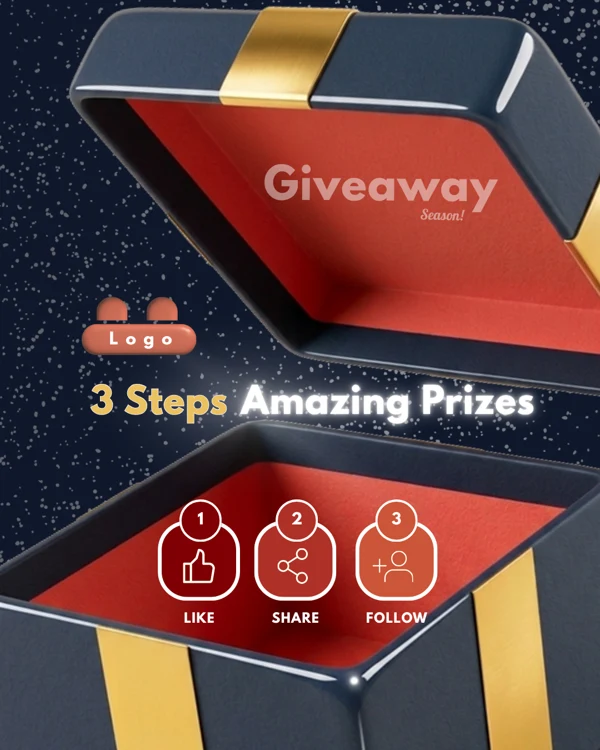
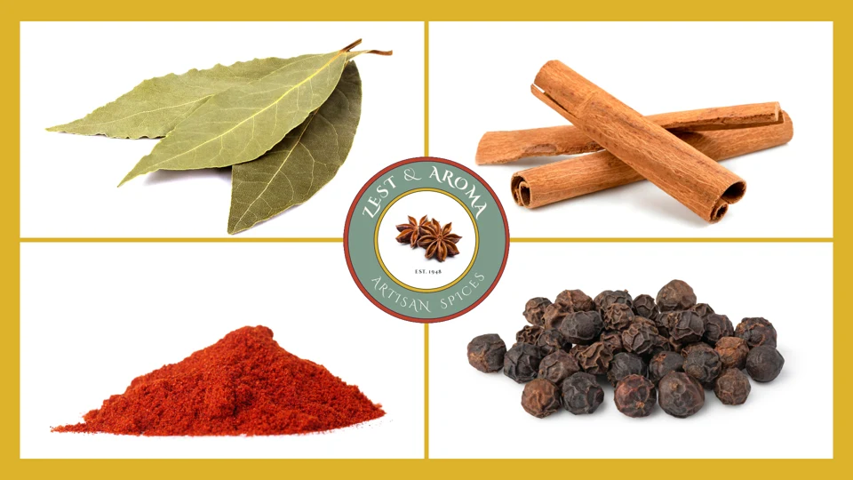

Visual identity
Logos, typography, color palettes, and visual direction.
Srulik Shriki · Design portfolio
Grounded in graphic communication, I design visual identities, social campaigns, and content that help brands connect with their audiences.


Case studies
01 / Campaign design · Social media · Content planning
Social content and campaign planning from the Digital Summer Clinic, alongside independent promotional concepts.
02 / Brand identity · Audience research · Content strategy
A brand and marketing concept for an artisan spice store, with a publishing plan and proposed creative tests.

About
I bring a background in graphic communication to brand identity and campaign design. I enjoy turning audience insights into visual directions and planning how those ideas come to life across channels.
Logos, typography, color palettes, and visual direction.
Social graphics, short videos, and promotional assets.
Audience personas, messaging, and customer journey mapping.
Content themes, publishing calendars, and platform-specific copy.